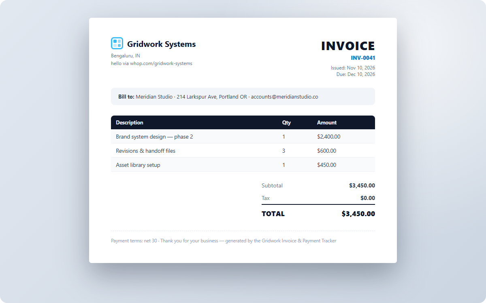

Maker Stock & Cost Ledger
$17 one-time · lifetime updates
Inventory that reconciles: every purchase, pour, and sale in one double-entry ledger.
Materials in, production converts, sales decrement. Live stock per item with reorder flags, COGS per batch rolled up from the ledger, and a monthly economics dashboard.
Buy now — $17 one-time →
lifetime updates · all sales final
What's inside
- Ledger tab: purchases, production, sales — stock always reconciles
- Items tab: live stock, average cost, REORDER flag when below your set point
- Batches tab: materials + labor + overhead = COGS per unit
- Orders + Dashboard: profit per order, monthly margin
- Worked example: 24 candles at $1.91 each, start to finish
Why it's worth it
- Built for candle makers, t-shirt sellers, and small product businesses
- Works in Excel and Google Sheets
- Honest limits documented: when to graduate to real inventory software
Guides that use this system
Every template has a full walkthrough in our guides — read the method before you buy a single cell.
Read the guides